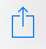

Overtime is a web app that helps you track your overtime.
You can run it in your browser or add it to the home screen of your mobile device.
Add it to the home screen of your iOS device by pressing  and "Add to Home Screen".
Add it to the home screen of your Android device by pressing and "Add to home screen".
Add it to the home screen of your Android device by pressing "Settings" button, then "Save to bookmarks", then from the "Add to" menu select "Home screen".